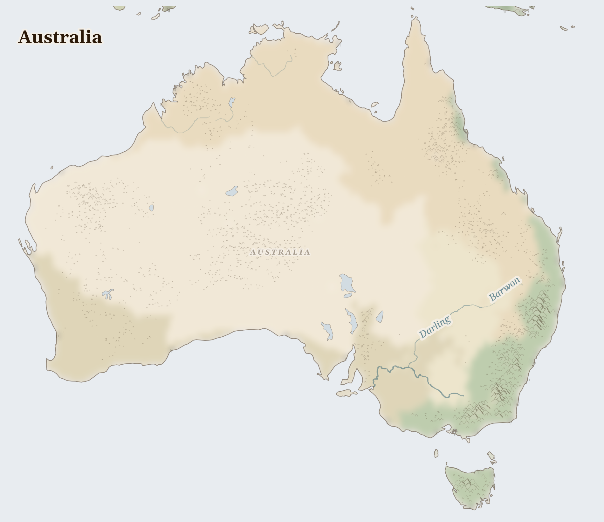

Australia26M people
ecology last verified 4 months ago
Ecosystem
Murray-Darling — Australia's food bowl running a permanent water deficit

Reference map. Country boundaries and features are approximate.
Lives Lived Here
In the pre-dawn dark outside Griffith, a rice farmer checks the flow gauge on his Murray channel. The water allocation notice arrived last week: 40% of entitlement. He plants less rice, sells some water on the temporary market to a cotton grower in the Namoi who can pay more per megalitre, and hopes the spring rains come. The water he sells flows north instead of south. Downstream, a Barkindji elder at Wilcannia sees the Darling River dropping. The fish kills will start again if it drops further — in 2019, a million native fish died at Menindee in water so depleted of oxygen it turned green.
A composite portrait drawn from humanitarian reporting — not a named individual.
What Presses
thermal coal, iron ore, liquefied natural gas (LNG) leaving.
For Prayer
Last updated on 2026-07-20.
For the gifts of this ancient continent — for the oldest living cultures on earth, for its space and hard light, for a prosperity built on a land of deep time. That plenty may not become forgetfulness.
For the coal and gas and iron shipped out of this country to build and burn across the world — the ore trains miles long, the gas platforms off the north — and for the warming that this trade pours into an already-drying land. Teach us to trace the world's furnaces back to these red pits.
For the First Nations on whose country the mines are dug — the Gomeroi, the Yolngu, the Martu, the peoples of the Pilbara — whose sacred sites have been blasted for ore, and who are still asking to be truly heard in the life of their own land. For truth, and for treaty.
For eyes to see a wealthy nation whose wealth is dug from the ground of its first peoples and sold to warm the world; and for a love here that is willing to be unsettled by both.
Psalm 117 (Hallel — Shortest Psalm)
O praise the Lord, all you nations; praise him, all you peoples. For great is his steadfast love towards us, and the faithfulness of the Lord endures for ever. Alleluia.
Collect — goodness
Lord of all power and might, the author and giver of all good things: graft in our hearts the love of your name, increase in us true religion, nourish us with all goodness, and of your great mercy keep us in the same; through Jesus Christ your Son our Lord, who is alive and reigns with you, in the unity of the Holy Spirit, one God, now and for ever.
Amen.
Take Action
Organizations working at the nodes this briefing traces
Aboriginal-led organization reviving cultural burning practices across Australia. Trains Indigenous and non-Indigenous land managers in traditional fire knowledge that has sustained eucalypt landscapes for 65,000 years.
Directly addresses the atmospheric network crisis — megafires replacing the Aboriginal fire management that eucalypt forests evolved with. Cultural burning is the only demonstrated sustainable fire regime for these landscapes.
Confederation of First Nations peoples along the Murray-Darling river system, advocating for Aboriginal water rights and cultural flows. Represents the Traditional Owners whose water rights remain largely unfulfilled under the Basin Plan.
Represents the cost-bearers at the center of the water network crisis — Aboriginal nations whose cultural water rights are structurally subordinated to irrigator allocations in a river system where more water rights exist than actual water.
Australian grassroots alliance of farming communities, Traditional Owners, and conservationists opposing destructive mining and gas extraction. Coordinates community campaigns against coal seam gas, open-cut mining, and sacred site destruction.
Works at the intersection of the mineral and carbon extractive flows — coal from Hunter Valley, iron ore from the Pilbara, LNG from the Browse Basin — where Gomeroi, Wiradjuri, Karijini, and other First Nations bear the cost.
Australian conservation organization focused on the health of inland river systems, particularly the Murray-Darling. Monitors water allocation compliance, environmental flow delivery, and the ecological condition of rivers and wetlands.
Monitors the Murray-Darling basin that produces a third of Australia's food from chronically over-allocated water. Tracks whether environmental flows actually reach downstream ecosystems and Aboriginal communities.
Carry This
What to bring with you from this briefing
Where this comes from (10 sources)
Tier 1 = UN agencies & peer-reviewed · Tier 2 = community voice & justice orgs · Tier 3 = corporate / unverified
- Australian Institute of Marine Science, Annual Summary Report on Coral Reef Condition, 2024. https://www.aims.gov.au
- IEA, Australia Energy Profile, 2024. https://www.iea.org/countries/australia
- Gammage, B., The Biggest Estate on Earth: How Aborigines Made Australia, Allen & Unwin, 2011
- Bureau of Meteorology Australia, State of the Climate Report, 2024. http://www.bom.gov.au
- USGS, Mineral Commodity Summaries: Iron Ore and Lithium (Australia), 2024
- NOAA Coral Reef Watch, Great Barrier Reef Monitoring, 2024. https://coralreefwatch.noaa.gov
- Murray-Darling Basin Authority, Basin Plan Annual Report, 2024. https://www.mdba.gov.au
- Bowman, D.M.J.S. et al., Vegetation Fires in the Anthropocene, Nature Reviews Earth and Environment, 2020
- IPCC AR6, Australasia Chapter, 2021
- Geoscience Australia, Mineral Resources Assessment, 2024. https://www.ga.gov.au
Generated 2026-07-24 · narrative prose AI-synthesized